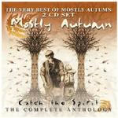

| Artist: | Mostly Autumn |
| Title: | Catch The Spirit |
| Label: | Classic Rock Productions CRP1020 |
| Length(s): | minutes |
| Year(s) of release: | 2002 |
| Month of review: | [04/2003] |
| 1) | Nowhere To Hide | 5.03 |
| 2) | We Come And We Go | 4.41 |
| 3) | Please | 5.05 |
| 4) | The Spirit Of Autumn Past | 4.34 |
| 5) | Evergreen | 7.57 |
| 6) | The Riders Of Rohan | 3.33 |
| 7) | This Great Blue Pearl | 3.57 |
| 8) | Noise From My Head | 3.05 |
| 9) | Half The Mountain | 5.16 |
| 10) | Shrinking Violet | 8.46 |
| 11) | Goodbye Alone | 6.53 |
| 12) | Heroes Never Die | 11.14 |
Disc 2 Mother Nature:
| 1) | Overture - The Forge Of Sauron | 3.51 |
| 2) | The Dark Before The Dawn | 4.27 |
| 3) | Prints In The Stone | 3.49 |
| 4) | The Return Of The King | 4.26 |
| 5) | The Night Sky | 9.34 |
| 6) | Winter Mountain | 6.21 |
| 7) | The Last Climb | 9.12 |
| 8) | Never The Rainbow | 4.32 |
| 9) | Porcupine Rain | 5.00 |
| 10) | The Gap Is Too Wide | 10.37 |
| 11) | Mother Nature | 13.17 |
We Come And We Go is a ballad type track at first, sung by Findlay, but wait until the chorus sets in. Their is a strong hint of sadness and feeling to this chorus, which seems to burst from the speakers. The guitar sound reminds strongly of Pink Floyd. With Please Josh's vocals are supported at times by Findlay's. At times their is a feel which corresponds with Marillion's Easter. Later the pace picks up moving more in a rock direction. At times Josh becomes plaintive, but sometimes the music can be called neo-progressive. The folk is a bit less pronounced but the percussive intermezzo, does give the song a certain variety which it otherwise would have lacked.
We continue with the title track of the second album, The Spirit Of Autumn Past. Again, everything is fine in the vocal department, and the music picks up in speed and bombast later on in the track when the rest of vocalists set in. The first part of the track however is quite relaxed, and maybe a bit too freewheeling to fully captivate. I still think Josh's voice is not always strong enough to carry all songs all of the time. This is one of the tracks, where the magic is a bit lacking. The instrumental side of the song is more appealling. Evergreen opens with soft acoustic guitar, sensitive. Findlay sings this one, opening with soft spoken vocals. I always think back to Juliane Regan of All About Eve at this point. As often happens on Mostly Autumn songs, the power comes into the song latyer in the song. This times the organ brims, after which the guitar takes off. The vocal part returning, this time Josh doing the spoken backing to the ethereal voice of Findlay. The guitar playing only now begins in earnest, strongly emotive as usual.
With The Riders Of Rohan we encounter the first Lord Of The Rings track. After a pianic opening, we come to a rather merry passage. The drummer hacks away on this one, making for something rhythmically less interesting. Very accessible with powerful accents.
With This Great Blue Pearl we go back to The Spirit Of Autumn Past. This is a rather untypical track for the band in a way, possibly because of the distinctive vocal elements in some places. The vocals are this time sung by both, and in the verse has the same feel as Genesis in the Wind And Wuthering era. The chorus is a bit more catchy.
I am not familiar with Noise From My Head. Could it be part of one of the singles, Prints Of The Stone maybe? It is a rather up-beat track, with runs of piano. Not the strongest track, but it is also nice to hear something new. Rhythmically quite a heavy one, and it does rock.
Half The Mountain is a more epic piece. The vocal melody is strong, and the overall style reminds me of early Kayak (although I do not expect them to know that band). One of those songs which gets underway slowly, plodding, dragging along (but not in negative sense). The flute solo is a soft and wailing one, the focus is on melody here. The flute does take away some of the tension that the vocal part raises. This one may be too sweet for some but I think it's beautiful. The intermezzo with all the sounds is a bit in the line of Beatles A Day In The Life. Then the music erupts into a vrery symphonic ending.
Shrinking Violet brings back the All About Eve influence. A soft acoustic backdrop, melancholic female vocals dominate the first half of this one. The second half of the track features a Floydian guitar solo, slow moving, but deep and a children choir singing the more uplifting repetitive ending passage.
Goodbye Alone is again one of those typical Mostly Autumn tracks where the music starts off quietly and melodic to end in crescendo. This time the beginning is filled with violin and flute. Regarding the flute, on the first two albums of the band, the violin and an occasional jig was to be found. It seems these songs, usually written by Bob Faulds are not among the favourites, because you will not find them here. One might say these songs are not typical for the band, at least they are not on their latest two albums. The strumming acoustic guitars sets in as well. The ending features a rowdy, later wailing guitar solo over the friendly playing. You might be reminded of Pendragon's Nick Barrett here.
The final track on this first disc is the long Heroes Never Die. This version is close to two minutes longer than the orginial. The song opens with soft spoken acoustic guitar and spanish guitar. Then the speed comes in a bit more, with fast played guitar, still subdued. The song gains in catchiness along the way, with the usual folky influences lending the music a certain spirit.
On the disc we continue with Overture - The Forge Of Sauron, a dark and percussive introduction. The growls are there, the themes as well. The Dark Before The Dawn is one of the more catchy and folk rich songs, and where the merry flute has an important role. Folky acoustic guitar open Prints In The Stone, where we hear both singers this time, Heather doing the backing. The song is quite tranquil on the whole, although it gets to be a bit darker in the middle. The vocals are different here. A rather unremarkable track.
The Return Of the King is rowdy track, with some great thematic material in there. Powerful chords, loud vocals and loud drums dominate. The middle part is more restful, sleepy making even. But this is only for a short while. The Night Sky is one of my favourite Mostly Autumn tracks, and as it turns out it is also one of the first, if not THE, first Bryan Josh song. It is strongly influenced by Pink Floyd. It get slowly underway, with dreamy flute, washes of tingling keyboards, a very slow and natural feel. The Floyd atmosphere creeps in already during the dark violin part. Part halfway we are already in the great guitar solo that dominates this song.
Winter Mountain is on the other hand one of the catchiest rock tracks by the band. Nothing epic about this one, simply folky melodic rock at its best with both vocalist at the helm. The rock guitar is quite rowdy on this one. An acoustic intermezzo follows next, soon to be replaced again by the rocky chorus. The singing is not all out here, a bit restrained, as is the tempo. Time for a wailing keyboard solo then going almost over the top. A good finale with the guitar and vocals taken over again following the line set by the keyboards.
We are now nearing the end of this long collection, but still have three long and two shorter tracks to go. The Last Climb is the first of these and opens with birds whistling. Back to nature. A slow lightly bouncing track. The Floyd feel is strongly apparent, low and slow. The voilin figures quite strongly on this one, moving into a flute passage, all the while gurgly keyboards softly bouncing in the back. Then guitar and organ set in for something more forceful.
Afterwards, it is time for a catchy rock track, Never The Rainbow. This is certainly one of the more driven ones, with a very accessible chorus, the verses being more distinctive. Plenty of organ drive in here, although the drums sound a bit thin, or maybe simply a bit too monotonous.
Porcupine Rain opens with swirling keyboards and repetitive guitar. Again a striking melody on this mid-tempo track. I do think the rhythm section could use some more groove, this is a thing I have noticed more often on these tracks.
We close with two epic tracks. The first of these The Gap Is Too Wide from The Spirit Of Autumn Past. A slow acoustic beginning with Findlay's vocals sounding melancholic. The string orchestra lends the whole an imposing feel. Goosebumps return when the song moves into the choral part, slowly, but steadily. It ends with uillean pipes and takes a long time concluding fading away slowly.
Mother Nature is the final one and probably the most accomplished of the epics. As usual we open with slow, somewhat sad melodies. The harpsichord continuation has a Genesis feel, but this stops at the vocals. The Floyd influences are again strong, but does manage to give it a twist of its own. A magnificent track, ripe with organ, great melodies and emotional vocals.